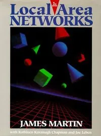
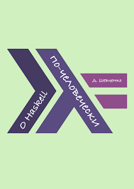
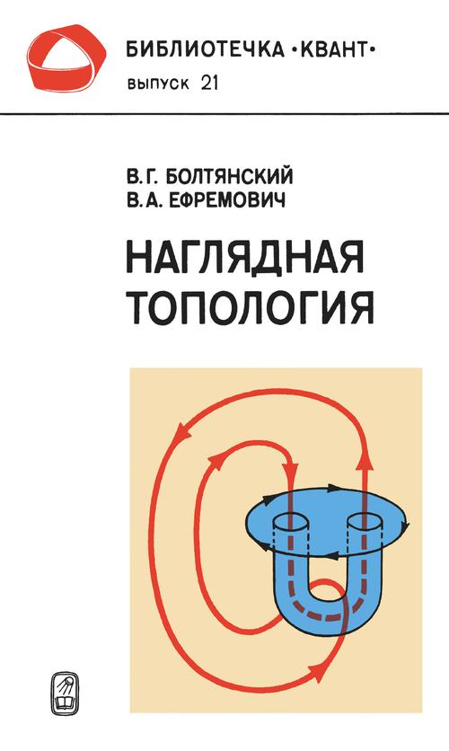
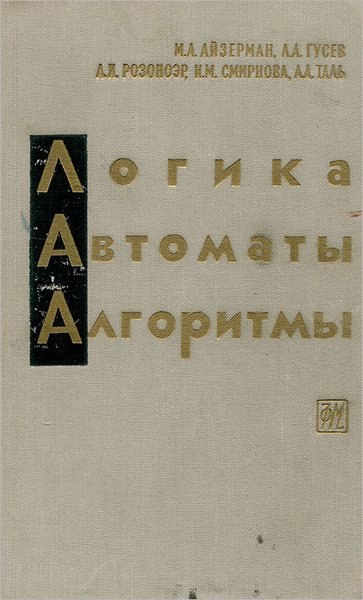
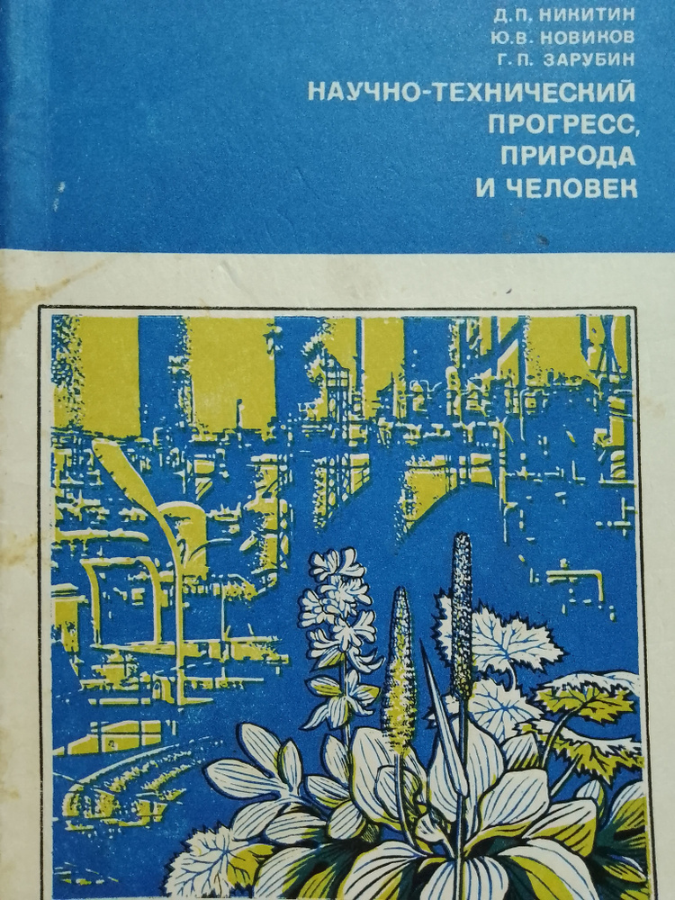
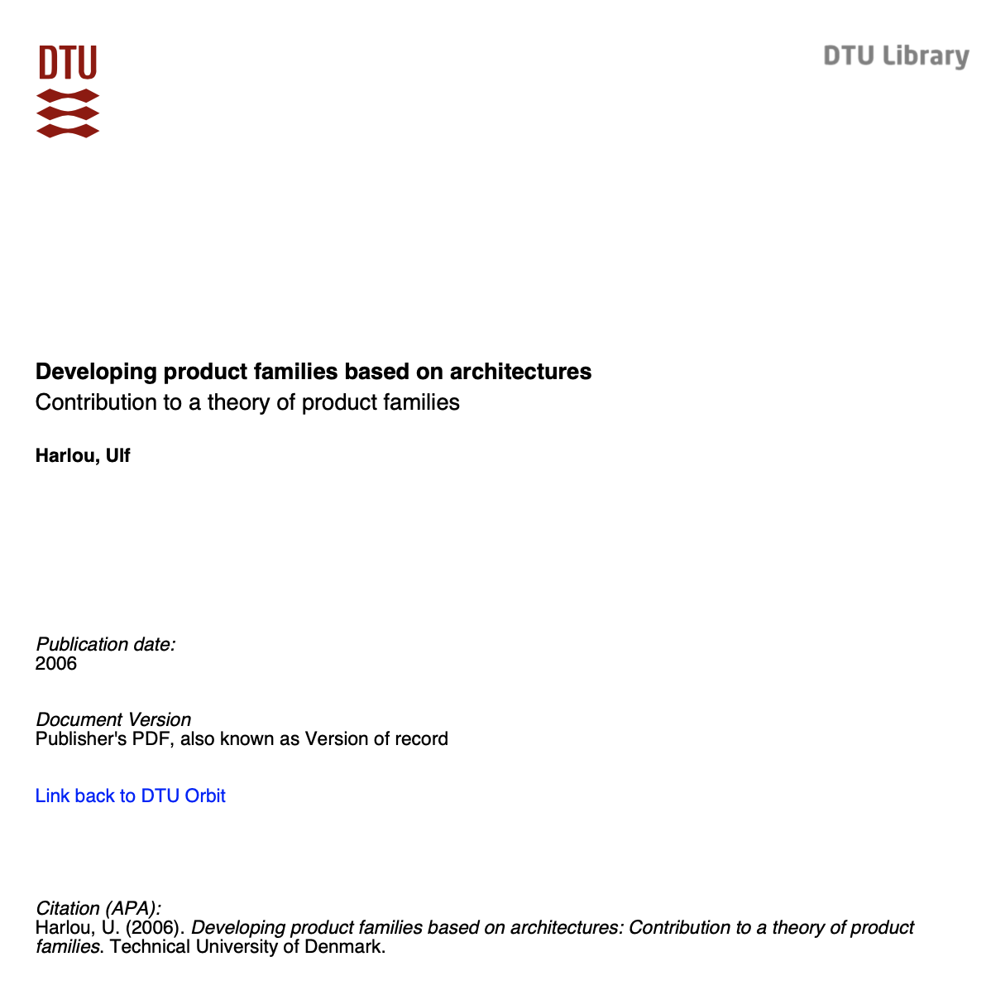
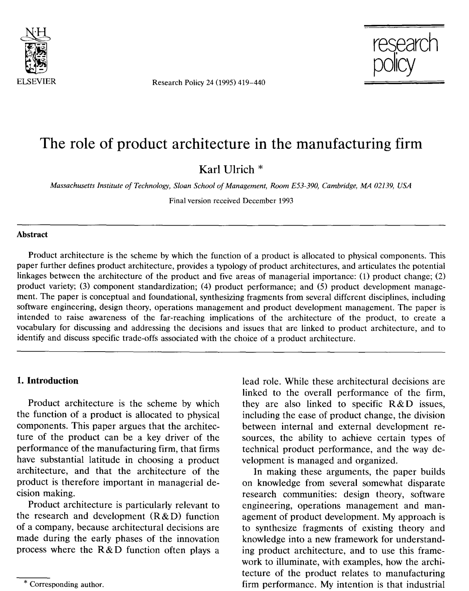
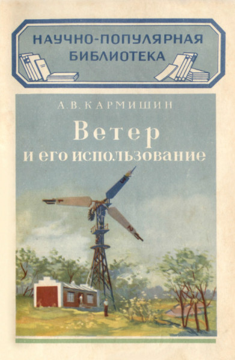
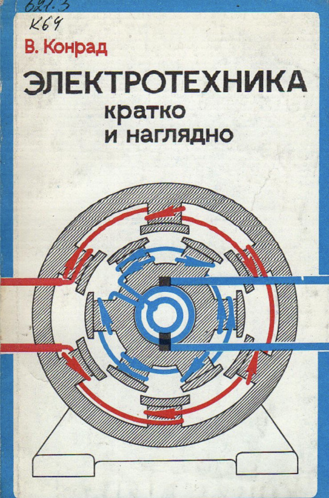

Categories
- IT
- Science
- Professional literature
- Classical Literature
- Popular
🧮 IT
-
View Book
G. G. Chowdhury, Sudatta Chowdhury
Organizing Information
From the Shelf to the Web, 2007
Facet Publishing; 1st edition
Описание:
Metadata, Markup languages,
ontology, information architecture and semantic web
-
 View Book
Louis Rosenfeld, Peter Morville, Jorge Arango
View Book
Louis Rosenfeld, Peter Morville, Jorge Arango
Information Architecture
For The Web And Beyond, 2015
O'Reilly Media; 4th edition
Описание:
Information architecture object and principles, user-context-content model,
organizing of information, navigation, labeling nad search systems, metadata, thesauri, semantic relations and controlled vocabularies,
practical implementation approaches
-

View Book
James Martin with Kathleen Kavanagh Chapman, Joe Leben
Local Area Networks
Architecture and Implementations, 1994
Prentice Hall PTR; 2nd edition
Описание:
A narrative about network technologies at the dawn of the internet, many of which are now a thing of the past. The book lacks a coherent plot;
the information is presented without the strict system, and many things are repeated in different parts of the book.
In this sense, the book feels more like a poorly assembled hodgepodge of different pieces, making it difficult to read.
However, the core concepts remain unchanged to this day, such as the OSI Model of Functional Layers and an explanation of operating principles based on it.
The Physical layer, Logical Link Control, Medium Access Control, the Ethernet, TCP/IP, the functions of Bridges and Routers are covered in detail.
The book provides a general understanding of how the Internet works.
-

View Book
Шевченко Денис
О Haskell по человечески, 2016; 2nd edition
https://github.com/denisshevchenko/ohaskell.guide
Описание:
Неплохая книга чтобы получить первое представление о языке Хаскелл, незаконченная.
Книга даст ответы на некоторые вопросы о языке, но далеко не на все, а даже наоборот, после прочтения появятся много новых вопросов.
⚛ Science
- 
В.Г.Болтянский, В.А. Ефремович
Наглядная топология. 1982
Издательство: Наука
Описание: Топология линий (включая теорию Графов), Топология поверхностей, Гомотопии и гомологии
View Book
-

Айзерман М.А., Гусев Л. А., Розоноэр Л. И., Смирнова И. М., Таль А. А.
Логика. Автоматы. Алгоритмы. 1963
Издательство: Физматгиз
Описание: Общая теория конечных автоматов и последовательных машин, Исчисление высказываний и предикатов, Основы теории алгоритмов (рекурсивных функций)
Конечная динамическая система назввается конечным автоматом, если состояние системы в каждый такт однозначно определяется: а) состоянием системы в предыдущий такт и б) входом в предыдущий или рассматриваемый такт
View Book
-

Д. П. Никитин, Ю. В. Новиков, Г. П. Зарубин
Научно-технический прогресс, природа и человек. 1977
Издательство: Наука
Описание: Рассматриваются вопросы охраны окружающей среды. Наглядно показываются преимущества социально-планового подхода перед буржуазно-капиталистическим.
Книга дает представление о том, чем отличется реальная деятельность и научных подход к защите окружающей среды от навязанных в западном мире политических течений "экологизма" и "зеленой повестки".
Человек отличается от других животных... Это отличие состоит в том, что человек не просто биологический вид, но является составной частью особой социальной среды — общества. Среда человека — это не только природа, она формируется также другими качественно новыми социально-экономическими условиями.
View Book
-
Норберт Винер
Кибернетика
или управление и связь в животном и машине. 1968
Издательство: Советское радио
Описание:
Книга затрагивает широкий круг вопросов, от сферы наук технических до сферы наук социальных и гуманитарных. Из-за этого в книге нет единой сюжетной линии, это скорее сборник разных мыслей, сдобренный большим кол-вом расчетов.
Многие мысли автора акутальны по сей день, многие - нет, в особенности его рассуждения и предсказания и природе мышления и устройстве мозга,
поскольку эта область оказалась значительно сложнее и до сих пор большинство вопросов остаются открытыми.
1) Информация — это информация, а не материя и не энергия.
2) Обучающаяся машина - это такая машина, которая не просто, скажем, играет, в какую-нибудь игру по твердым правилам, с неизменной стратегией, но периодически или непрерывно рассматривает результаты этой стратегии, дабы определить, нельзя ли изменить с пользой те или иные параметры, те или иные величины в стратегии.
View Book
-

Harlou, Ulf
Developing product families based on architectures
Contribution to a theory of product families, 2006
Издательство: Technical University of Denmark
Описание:
Thesis for the degree of Doctor of Philosophy. Откровенно слабая дессертационная работа больше похожая на гуманитарный трактат на тему "продуктовых семейств" в design theory.
Автор попытался обобщить опыт разработки продуктовых семейств из таких компаний как Bang & Olufsen, Vestas, LEGO, Alfa Laval и YORK в некую теорию и даже ввел такие новые термины как
Generic Organ Diagram, PFMP, Design Unit (при этом не дав определения элементам входящим в эти понятия). Но по факту все описываемые понятия никак не формализованны, не имеют под собой никакого математического аппарата и поэтому представляют малую практическую и научную ценность.
Данный подход в разработке может быть применим только для продуктов, конструкция которых целиком и полностью определяется несколькими функциональными требованиями, которые не зависят от сторонних факторов и их изменение четко предсказуемо.
Данный подход не применим к более комплексным и сложным продуктам, конструкция которых зависит не только от функциональных требований, но и от других сторонних факторов, как например специфические требования заказчика, проекта, смежных систем и т.д.
По сути этот подход можно применять только к продуктам массового и сериийного типов. Любой нормальный студент 4го курса машиностроительного факультета из СССР или РФ не найдет здесь для себя ничего нового.
The design is modelled from two constitutive viewpoints – organs and parts. The two constitutive viewpoints are necessary for explaining the behaviour of a design and its physical realisation. The organ models describe the units that possess functions and the parts model describes the physical units that are realised in a sequence of production processes.
View Book
-

Ulrich, K. T.
The Role of Product Architecture in the Manufacturing Firm, 1995
Издательство: Elsevier, Vol.24
Описание:
Research Policy. Consise essay describing the two main approaches to the product architecture - integral and modular, with furhter introducing the sub-types of modularity: slot, bus and sectional - which could be of use.
The product architecture as described in the paper is applicable to the mass or serial products which are driven by function/designer decisions. Not applicable for products dependant on external uncontrolled factors (customer or project requirements, external interfaces, etc).
In informal terms, the architecture of the product is the scheme by which the function of the product is allocated to physical components.
View Book
🛠️ Professional literature
- 
А.В.Кармишин Ветер и его использование. 1951
Издательство: Гостехиздат
Описание: Природа и физика ветра, вопросы ветроэнергетики
View Book
- 
Конрад В.
Электротехника кратко и наглядно. 1980
Издательство: Ленинград "Энергия". Ленинградское отделение
Описание: Физика электричества и магнетизма в рамках школьного круса, краткий обзор электрических машин и оборудования, распределительных сетей
View Book
-
Брушлинский Н.Н., Соколов С.В., Вагнер П.
Человечество и пожары, 2007
Издательство: ИПЦ Маска
Описание: Исследование о пожарах, их природе, технике их предупреждения и борьбы с ними.
Подкрепленно статистическими и историческими справочными данными. Книга может быть полезна специалистам из этой сферы.
View Book
🕯️ Classical Literature
Popular 🛋️
-
View Book
С. Корнеев
Тайны творчества, 1962;
Тамбовское книжное издательство
Описание:
Серия Библиотечка новатора. Коротенькая книжка предназначенная для знакомства школьников с теорией решения изобретательских задач (ТРИЗ).
- Book 1
- Book N